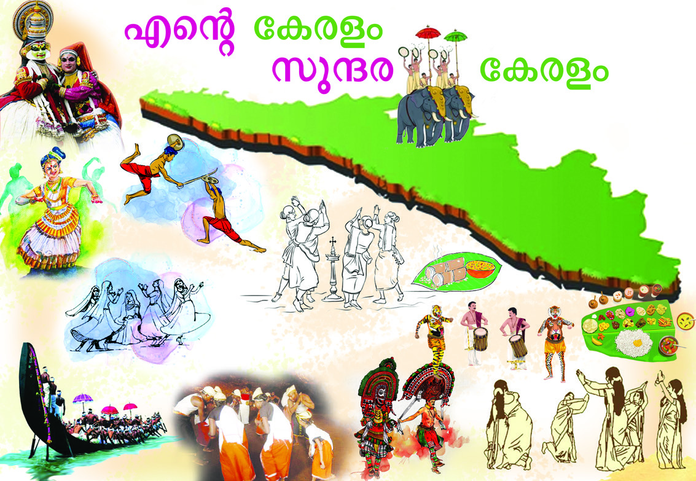
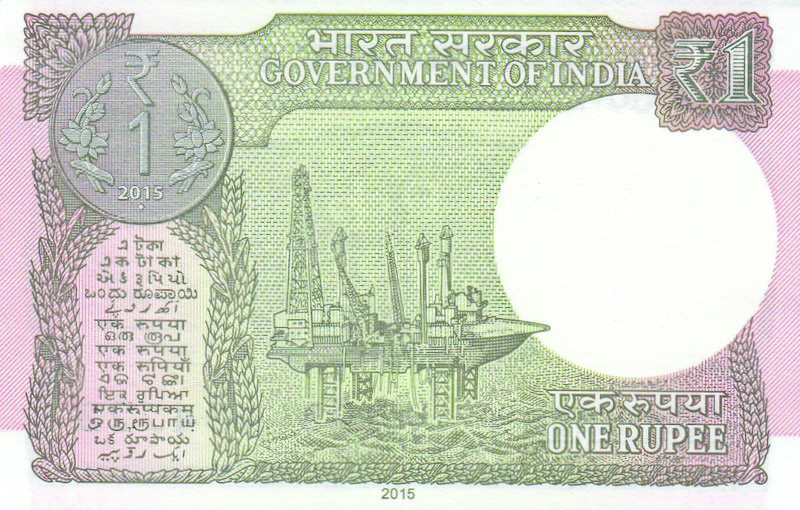
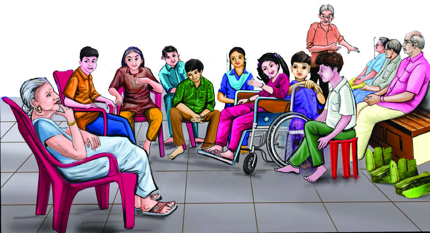
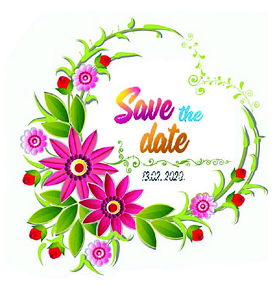
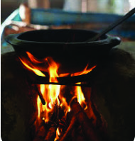
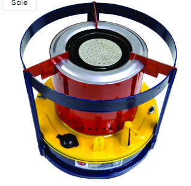
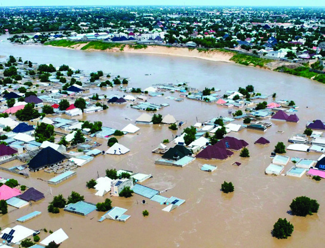

Figure fig_ch05_p060_01 (Page 60) Figure fig_ch05_p060_02 (Page 60) Figure fig_ch05_p060_03 (Page 60)
ഇന്ത്യയ പല നിിറങ്ങളുംം ഭാാഷകളുംം പാരമ്പര്യങ്ങളുുമുുള്ള രാജ്യയമാണ്്. വടക്ക്് മഞ്ഞുുമൂൂ
ടെെയുംം� ജീവിതകഥകളാൽ സമ്പന്നവുംം�

Figure fig_ch05_p061_01 (Page 61) Figure fig_ch05_p061_02 (Page 61) Figure fig_ch05_p061_03 (Page 61) Figure fig_ch05_p061_04 (Page 61) Figure fig_ch05_p061_05 (Page 61)
സാാമൂൂഹ്യയശാാസ്ത്രംം ക്ലാാസ്
ന്ധിിച്ച്് തയ്യാാറാക്കിയ ബ്രോോƖോഷർ
Figure fig_ch05_p062_01 (Page 62) Figure fig_ch05_p062_02 (Page 62) Figure fig_ch05_p062_03 (Page 62) Figure fig_ch05_p062_04 (Page 62) Figure fig_ch05_p062_05 (Page 62) Figure fig_ch05_p062_06 (Page 62) Figure fig_ch05_p062_08 (Page 62)
സാാമൂൂഹ്യയശാാസ്ത്രംം ക്ലാാസ്
ഹാരം നിിങ്ങൾക്കെ�ല്ലാവർക്കുംം� കൊൊsൊണ്ടുുവരാം�.
Figure fig_ch05_p063_01 (Page 63) Figure fig_ch05_p063_03 (Page 63) Figure fig_ch05_p063_04 (Page 63)
സാാമൂൂഹ്യയശാാസ്ത്രംം ക്ലാാസ്
Figure fig_ch05_p064_01 (Page 64) Figure fig_ch05_p064_02 (Page 64) Figure fig_ch05_p064_03 (Page 64)
സാാമൂൂഹ്യയശാാസ്ത്രംം ക്ലാാസ്
Figure fig_ch05_p065_01 (Page 65) 
Figure fig_ch05_p065_02 (Page 65) Figure fig_ch05_p065_03 (Page 65)
സാാമൂൂഹ്യയശാാസ്ത്രംം ക്ലാാസ്
Figure fig_ch05_p066_01 (Page 66)
സാാമൂൂഹ്യയശാാസ്ത്രംം ക്ലാാസ്

Figure fig_ch05_p067_01 (Page 67) Figure fig_ch05_p067_02 (Page 67) Figure fig_ch05_p067_03 (Page 67) Figure fig_ch05_p067_04 (Page 67) Figure fig_ch05_p067_05 (Page 67)
സാാമൂൂഹ്യയശാാസ്ത്രംം ക്ലാാസ്
Figure fig_ch05_p068_01 (Page 68) Figure fig_ch05_p068_02 (Page 68) 
Figure fig_ch05_p068_03 (Page 68) Figure fig_ch05_p068_04 (Page 68) Figure fig_ch05_p068_05 (Page 68)
സാാമൂൂഹ്യയശാാസ്ത്രംം ക്ലാാസ്
Figure fig_ch05_p069_01 (Page 69) Figure fig_ch05_p069_02 (Page 69) Figure fig_ch05_p069_03 (Page 69)
സാാമൂൂഹ്യയശാാസ്ത്രംം ക്ലാാസ്
Figure fig_ch05_p070_01 (Page 70)
സാാമൂൂഹ്യയശാാസ്ത്രംം ക്ലാാസ്
സാാമൂൂഹ്യയശാാസ്ത്രംം ക്ലാാസ്
Figure fig_ch05_p072_01 (Page 72) Figure fig_ch05_p072_02 (Page 72) 
Figure fig_ch05_p072_03 (Page 72) Figure fig_ch05_p072_04 (Page 72) 
Figure fig_ch05_p072_05 (Page 72) Figure fig_ch05_p072_06 (Page 72) Figure fig_ch05_p072_07 (Page 72) Figure fig_ch05_p072_08 (Page 72) Figure fig_ch05_p072_09 (Page 72)
സാാമൂൂഹ്യയശാാസ്ത്രംം ക്ലാാസ്
Figure fig_ch05_p073_01 (Page 73) Figure fig_ch05_p073_02 (Page 73) 
Figure fig_ch05_p073_03 (Page 73) Figure fig_ch05_p073_04 (Page 73)
സാാമൂൂഹ്യയശാാസ്ത്രംം ക്ലാാസ്
Figure fig_ch05_p074_01 (Page 74) Figure fig_ch05_p074_02 (Page 74)
സാാമൂൂഹ്യയശാാസ്ത്രംം ക്ലാാസ്